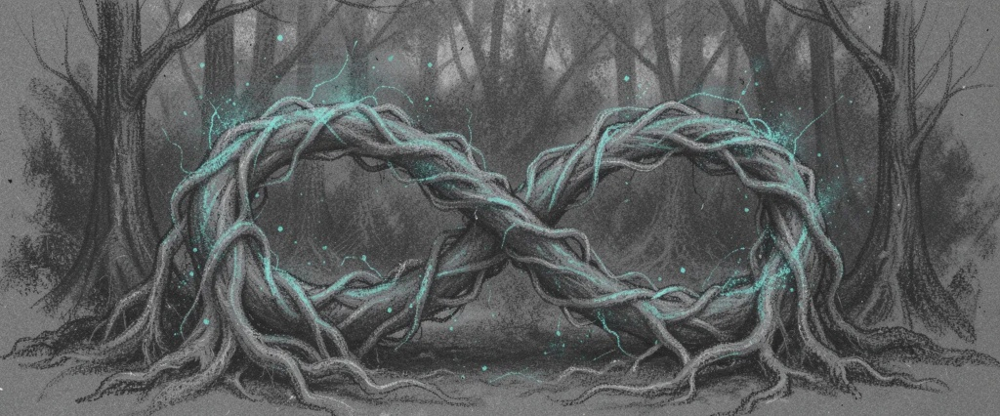

The Discord Companion for WoW: Forever
Sub-second item lookups, glancing blow math, custom dungeon maps, and smart command hints. Designed with 100% private per-user responses, zero corporate fluff, and zero channel clutter.

Interactive Discord Slash Simulator
Experience Foreverbot exactly as it appears in Discord. Click any command or type below to preview the instant response.
Built for Real Players, Guilds & Late-Night Leveling
Clean private replies, sub-second responses, and smart hints when you type the wrong command.
Zero Channel Clutter
All 39 personal research commands reply ephemerally. Only you can see your loot or BiS queries, leaving raid channels clean for communication.
Sub-Second Engine
Powered by an embedded, highly indexed SQLite catalog. Queries resolve locally in sub-second time with zero external web latency or rate limits.
Smart Query Redirection
Typing the wrong command? No problem. If you ask a question in /map or search a raid boss in /item, Foreverbot catches it by text, guides you to the right slash command, and provides instant navigation hints.
Exact Glancing Blow Math
Authentic classic combat formulas. Compare weapons factoring in +5 weapon skill racials, glancing penalty mitigation (35% to 5%), and crit caps vs level 63 bosses.
All 9 Custom Forever Dungeons
Complete coverage of WoW Forever's unique custom instances alongside classic dungeons: Scarlet Crypts, Karazhan Crypts, Timbermaw Hold, and Grim Batol.
Tuesday Weekly Intel Daemon
Autonomous background sync daemon tracking Tuesday weekly server maintenance, raid resets, Blizzard blue tracker announcements, and patch notes.
1-Click Multi-OS Launcher
Zero manual setup. Double-click to run on Linux, macOS, or Windows with auto-created virtual environments and instant dependency self-healing.
41 Instant Slash Commands
Search or filter commands by category. Click any command to copy its syntax directly to your clipboard.
Verified by Autonomous Overnight Soak Testing
Prior to release, Foreverbot was subjected to an autonomous 10.5+ hour continuous soak test executing exclusively against its slash commands, combat calculators, and catalog indexes.
| Benchmark Metric | Observed Telemetry | Target Threshold | Verification |
|---|---|---|---|
| Command Pass Rate | 100.00% (4,540,000+ Tests) | > 99.9% | ✅ PASS |
| Command Execution Failures | 0 Errors (Zero tolerance) | 0 Errors | ✅ PASS |
| Response Latency | Sub-second (< 1s typical) | < 1.0 s | ✅ PASS |
| 99th Percentile Latency (p99) | 0.56 ms (Glancing math & routing) | < 50.0 ms | ✅ PASS |
| Resident Memory Footprint | 59.86 MB (Flat VmRSS) | < 150 MB | ✅ PASS |
| SQLite Database Integrity | PRAGMA integrity_check = OK | Zero Corruption | ✅ PASS |
| Private Per-User Responses | 39 Ephemeral / 2 Public Views | Strict Ephemeral Isolation | ✅ PASS |
The Combinatorial Universe of WoW: Forever
With 19,628 items, 293,762 creature drop associations, and 41 commands, how many possible outcomes exist? We broke down the mathematics behind the catalog.
Over 528 million discrete combat duel and weapon comparison scenarios evaluated with exact racial weapon skill (+5 skill glancing mitigation from 35% down to 5%).
Over 53 nonillion theoretical level 50–60 endgame gear combinations parsed across 9 classes and 27 specs to isolate the optimal pre-raid BiS configurations.
Every single flight node across Kalimdor and the Eastern Kingdoms calculated with exact multi-hop transit paths, flight durations (minutes & seconds), and copper fees.
Exact average resisted damage curves computed across Fire, Frost, Nature, Shadow, and Arcane for Tanks, DPS, and Healers vs level 63 raid bosses.
Deterministic Ground Truth (100% Known Done)
Are we testing until we know everything is done? Yes. Every single row in the database — all 19,628 items, 4,245 quests, 10,122 creatures, 293,762 active drop records, and 46 dungeons — is swept deterministically. We verify SQLite PRAGMA integrity_check, ensure zero null pointers, validate ephemeral flags, and confirm every item stat matches authentic WoW Forever values.
Stochastic Soak Stress (Proving Infinite Reliability)
Beyond the static catalog, our autonomous test daemon runs continuous random sweeps across the multi-million possibility space. By executing millions of random combinations overnight, we verify that under unpredictable player behavior and massive load, memory remains locked flat at < 60 MB with 0 errors.
Host It Anywhere in 60 Seconds
Order of launch optimized for Linux, macOS, and Windows. Requires minimal system resources.
git clone https://github.com/ForeverbotDev/Foreverbot.git
cd Foreverbot
cp .env.example .env
nano .env # Paste your DISCORD_BOT_TOKEN
./start.sh # Auto-configures virtualenv & launches botdocs/HOSTING_AND_DEPLOYMENT.md for 24/7 background uptime.
git clone https://github.com/ForeverbotDev/Foreverbot.git
cd Foreverbot
cp .env.example .env
open -e .env # Paste your DISCORD_BOT_TOKEN
./start.command # Or double-click start.command in Finder!1. Download and extract Foreverbot from GitHub.
2. Rename .env.example to .env and open in Notepad.
3. Paste your DISCORD_BOT_TOKEN and save.
4. Double-click launch_foreverbot.bat!A Project Built for the Love of the Game
Foreverbot isn't a venture-backed tech startup or a monetized bot network — it's an independent, open-source passion project crafted with precision for the World of Warcraft: Forever community.
The design philosophy centers around high engineering craftsmanship, complete transparency, and mutual respect for players and guild communities:
/map), Foreverbot recognizes the context, provides immediate in-game guidance (Duskwood navigation towards Elwynn Forest), and smoothly directs to /ask.
Foreverbot is completely free and open-source under the MIT license. Whether you're a raid officer optimizing roster compositions or an adventurer exploring custom leveling zones, this tool was made for you.
Free, Open Source & Community Supported
Foreverbot is independently crafted for the World of Warcraft: Forever community. Zero ads, zero paywalls, zero monetization lock-ins.